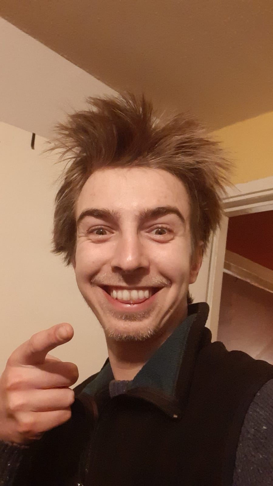
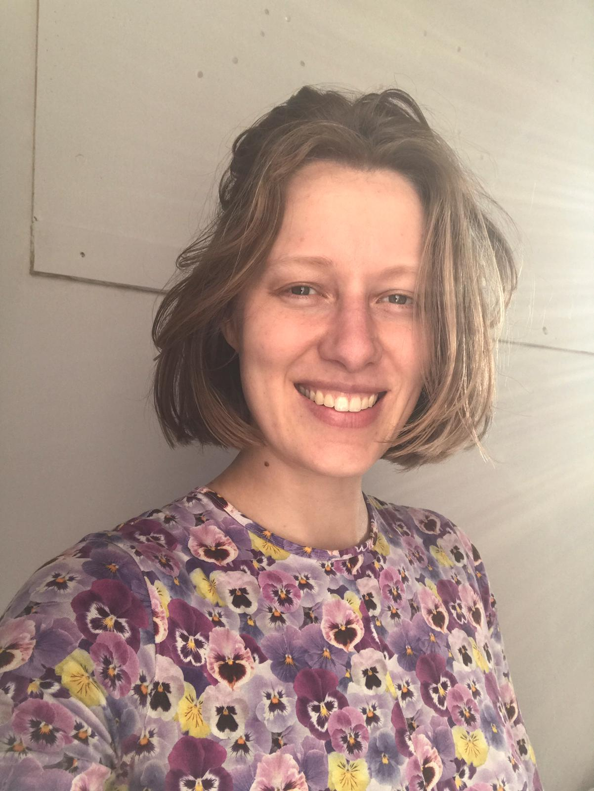

Hgtomi Rosa is an artist run space, collective and initiative established in September 2019 in The Hague. It is both studio space and project/exhibition space, in which public showing and the making process are inseparable.
Within its framework the participants are devoted to develop their individual practices in the greater educational context provided by the collective.
We are concerned with the different dynamics that come into play when we exhibit ‘something to someone’. We want to ask questions that relate to the where, when, why and for whom exhibiting exist. We want to challenge our conceptions and assumptions every time we do it.
Daniele Formica
Daniele Formica's work comes from the impulse to internalize and re-propose the universe to its people. Combining cross-disciplinary knowledge and everyday banality he composes a repertoire of linguistic revelations, schizophrenic theories and poetic claims. Through sculpture and performance, Daniele orbits around his repertoire and involves others in such movement.
Formica's repertoire is ultimately composed with the intention to share his view of a multi-layered and pluridimensional universe; and played for other humans to cultivate genuine curiosity towards life hidden realms; with the awareness that to contemplate is to set in motion new possibilities for the universe' revolution.
Hgtomi Rosa means a community where we explore our individual artist practices and nurse, inspire and amuse one another.
www.danieleformica.com

Alexander Webber
Laura Snijders
My work always revolves around the subject of fashion resulting in: photographs, (textile) installations, collage, publications and clothes. Since my graduation from fashion (at KABK, The Hague, 2018) I’ve been developing my work towards a more autonomous and multidisciplinary practice. In doing so, I seek different perspectives of looking at the current (fashion) system. I love how a chaotic system like the fashion system can function, how fashion is full of paradoxes and how there is no one outside the fashion system. I always start by observing the world around me; behavior, ways of dressing, climate change, order, systems and logic are subjects that keep coming back.
www.laurasnijders.com

Constantijn Scholten
Jan Dirk Adams
Yukari Nakamichi